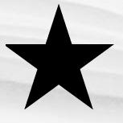
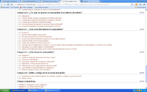
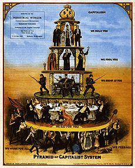
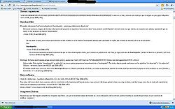

Anarcopedia
 De: La Frikipedia, la enciclopedia extremadamente seria.
De: La Frikipedia, la enciclopedia extremadamente seria.
| De la serie sitios web de ayer y de hoy:
|
| No-hay-acuerdo-en-el-nombrepedia
|
| 
|
| Paint y Photoshop Son capitalistas y por eso no podemos usarlos
|
|
| Dirección:
|
[No creemos en los dominios de internet]
|
| Se dedica a:
|
Hacernos creer en lo imposible a punta de ironías contraproducentes
|
| País de origen:
|
Frutopia,pero no creen en el estado
|
| Año de fundición:
|
1912 o 2004
|
| Propietario:
|
"No tiene" (como administrar una web sin autoridades)
|
| Creador:
|
Un facista-friki que les queria ver la cara
|
| Estado actual:
|
en construccion desde 2004
|
 Tal vez es hasta mas antigua que Frikipedia,pero no han encontrado las respuestas a sus propios interrogantes (Ampliarla para ver por que)
Anarcopedia,Anarkopedia,Anarchopedia o como coños se escriba es una burda copia de esta magna web,creada por Paul Mc Stalin en 1912 con el objetivo de controlar las mentes de possers de gente culta la clase obrera culta que ocupa todo su tiempo en Internet en vez de trabajar,es una wiki que contiene muchos misterios,como donde consiguieron un servidor que no tuviera partes de una multinacional o una empresa de trata de asiaticos
Lenguaje Anarcopedico
- Lammer:No es Lammmer Es "Facistacomunistanaziantinazi hijo del imperio capitalista sangriento malvado del mal" lo que muestra el gran afán que tienen algunas personas para demostrar que si son inteligentes
- Chucknorritis:Aqui este termino es reemplazado por "cultura-capitalistis" pero mas que nombrarlo a el esta prohibido hablar de el peor presidente de la historia mundial,Jorge arbusto
- Vandalismo: Aquí el blanqueo de paginas es distorsión fascista de la información y el vandalismo es apoyo las dictaduras presentes en el norte de mu y la atlántida
- Administrador:Mientras en esta pagina son la Inquisicion Banneadora , en la anarchopedia son "Los lideres que imponen su punto de vista y dan las ordenes,pero no son autoridades" aunque eso podría ser información contra producente porque no se sabe quien limpia la anarcopedia
- Frikipedista Junior y Senior:"Los rangos son una muestra de opresión,pero los utilizamos por que se nos da la regalada gana" a diferencia del 99% de las otras wikis,aqui el rango no es por contribuciones sino por quien hizo mas de esos utlisimos grafittis anarquistas
Política anarcopedica
La licencia de anarcopedia es la de todas la wikis como bien se sabe,la de la GNU que es de software libre,sin embargo en cuanto a la edición las políticas no son muy claras porque nadie te puede prohibir hacer nada,seria autoritario,puedes insultar a cuanta personas y empresas puedas porque la satira ™ y la irona ™ ahora pertenecen a una empresa que compra palabras y seria anti-anarquista usarlas,muchos de los datos de la anarcopedia son copiados de la Inodoropedia lo cual va en contravencion con su ideologia ya que "Wikipedia es censurada por el sistema y no nos gusta porque no nos obedece"
En cuanto a la censura capitalista y la opresion Facista-Nazi no se pueden castigar porque eso seria opresión,sin embargo lo hacen porque necesitan mantener a la wiki limpia de mensajes de el imperio,si alguien blanquea una pagina no se puede deshacer porque eso seria censura oligárquica y el hombre poderoso no puede violar la opinión de otra persona,pero los cambios que son "malos" son desechos porque se les da la gana demostrando que en realidad los directores de la anarcopedia son Delfines que quieren verle la cara a los Possers de gente culta.
Requisitos para ser anarcopedista
 Te lo repito,usan imagenes de hace 200 años porque creen que no ha cambiado nada
 Sus discusiones son destrosas y llenas de orgullo anarquista (ampliala y veras)
- Sentirte Guay porque eres anarquista
- Saber que los demas son estupidos porque no siguen tu ideologia
- Subestimar la opinion de cualquiera que crea en Dios ya sea Pastafarista o católico
- Dibujar utilisimos grafitis anarquistas que seguro revolucionaran el mundo
- Creer que todo es como hace 200 años e ignorar que a los Obreros ni siquiera les importa la causa
- Pasar por alto que los Vendedores de abarrotes y un artesano con un ayudante es un malvado Burgues
- Usar ropa punk y hacerse el loco con la marquilla que dice Zara O Dolce&Gabanna
- Las Converse y los celulares son capitalistas,pero eso no importa
- Usar Facebook y anarcopedia todo el santo día e ignorar que el primero es el sitio web que mas gana dinero en el mundo
- Cuando te pregunten que clase de servidor usa anarcopedia? Decir que el sistema operativo es de Dios OS,pero nunca responder que los componentes de la computadora los hace una empresa en Taiwan o la Isla del mal y que son fabricados por la Envidia ,Intel o AMD
- Lo mismo con todo lo que uses,tu cadena anarquista no fue hecha con metal de una mina en africa donde un obrero explotado por una multinacional saco el metal,sino que los lideres anarquista hicieron ellos mismos las cadenas desde el comienzo
Sabias que?
- Tienen 360 articulos o algo así (ver razón más abajo)
- Sus discusiones son aun más desastrosas que las de este sitio?
- Casi ningún usuario de anarcopedia habla español? (ver razón más abajo)
- El tema principal es el nombre de la wiki?
- Todos los nombres de usuario son de filósofos que nunca fueron felices? (quien lo sería si rechaza el dinero?! como se sabe el dinero no asegura la felicidad, pero es seguro que la pobreza trae infelicidad)
- El servidor de Anarchopedia International Corporation se encuentra en Serbia, manejado por Milos, un integrante del Consejo Secreto de Wikipedia e hijo friki de un acaudalado banquero nostálgico de la República Socialista de Yugoslavia?
- Que a Milos ya no le interesa el proyecto Anarchopedia International y lo ha abandonado a su suerte? (sigue pagando el servidor con el dinero de sus inversiones financieras en paraísos fiscales)
- El Usuario:Nihilo fue desde 2006 a 2010 el Amo y Señor de Anarcopedia en el idioma colonialista-cruzado que conocemos como español o castellano, instaurando lo se llamo la Edad de Oro de la "Dictadura del Despotismo Ilustrado Benevolente", con el visto bueno de los frikis serbios antiautoritarios...? Aunque otros dicen que en realidad era el único usuario activo el muy foreveralone... pero actualmente es ilegal decir esto último en Anarcopedia Española, bajo riesgo de ser acusado de conspiración restauracionista.
- Nihilo luego fue derrocado por Anarchopedia Italiana y Anarchopedia Francesa, en lo que el primero llamó un golpe de estado y los segundos una revolución libertadora? El Gobierno de Salvación vigente interino-indefinido borró todo artículo que insinúe que la libertad es buena (ahora debe decir que la libertad es buena sólo porque gobiernan ellos) y anuló todas las garantías fundamentales y ahora pueden borrarte la cuenta cuando ellos consideren que aquella sirve a los intereses cerdocapitalistastotalitariosdelasmultinacionalesnazifascistasvendidasalsistemapatriarcalfachoneoliberalqueprivatizatodoporquetodoesestatalvivaelestadodebienestarvivalarepublica o también cuando no entienden las ediciones en español. Ahora por decreto supremo Anarcopedia es más libre, pero no se te ocurra decir hacer preguntas o serás eliminado.
Ver tambien
Frikipedia 2005-2016, Licencia
GFDL 1.2 - Extraído por FrikiLeaks